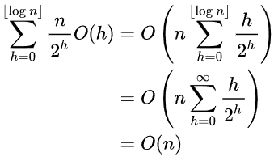
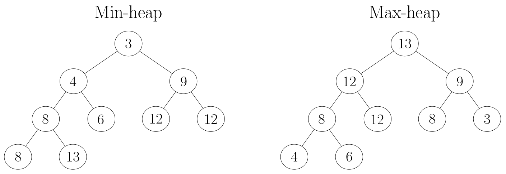
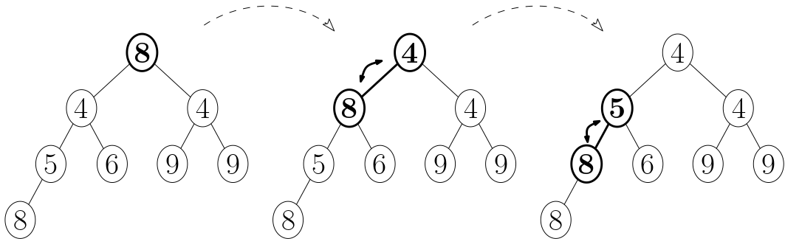
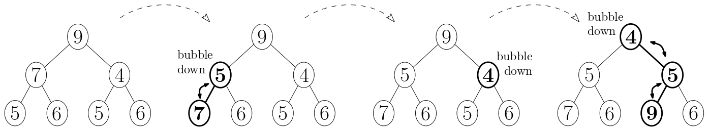
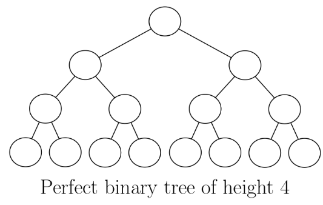
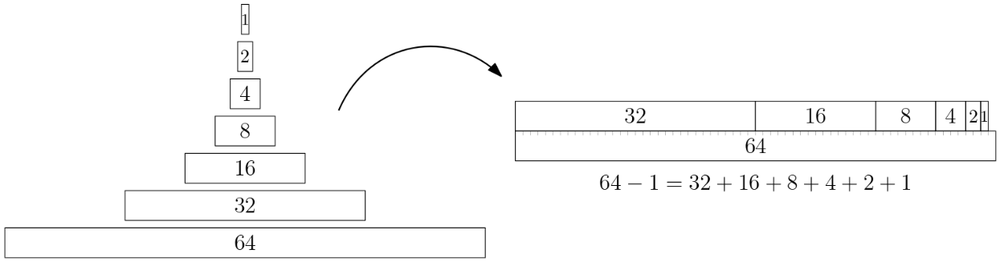
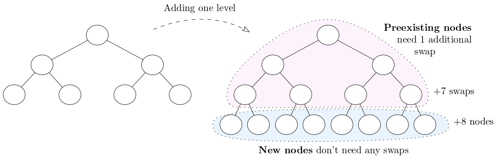

Return to the blog's main page.
Heapify Analysis Without Math
I'm writing about heaps for Beyond Cracking the Coding Interview (beyondctci.com), and the most technical part is the analysis of heapify. It's easy to show that it takes O(n log n) time, where n is the number of nodes in the heap, but it's not straightforward to show that this is not tight and the method actually takes O(n). time.
Every proof I have found online involves a summation over the levels of the heap that ends up looking something like the one in Wikipedia heap page:

which is more math than I want to put in this book (the bulk of the audience consists of people trying to land a SWE job, not math enthusiasts).
Below is the proof "without complicated math" I came up with that heapify takes O(n) time. If you are familiar with the classic proof, let me know if you find it easier - I might use it for the book. Also, please let me know if you've seen someone else proving it in a similar way.
If you already know what heapify is, you can jump directly to the Proof.
Heap Recap
Heaps are binary trees with two special properties:
- They are complete binary trees: all the levels except the last one have the maximum number of nodes; the last level may not be full, but all the nodes are aligned to the left. (In particular, this implies that heaps have logarithmic height, which is key to the big O analysis.)
- The heap property: every node is smaller than its children (this is assuming a min-heap - it would be the opposite for a max-heap).

I will focus on the heapify operation and its analysis, but if you want to learn heaps from scratch, the Algorithms with Attitude Youtube channel has a great video on it. He also covered the classic linear-time proof for heapify, if you want to compare it to mine.
In any case, I left a full Python heap implementation at the bottom of this post.
What's Heapify?
Heapify (invented by Robert W. Floyd) converts a binary tree which is already complete, but may not have the heap property, into a proper heap.
Heapify uses the "bubble-down" procedure, which starts at a node that may not satisfy the heap property, and recursively swaps it with the smallest of its two children until the heap property is restored:

def bubble_down(self, idx):
left_idx, right_idx = left_child(idx), right_child(idx)
is_leaf = left_idx >= len(self.heap)
if is_leaf: return # Leaves cannot be bubbled down.
# Find the index of the smallest child
child_idx = left_idx
if right_idx < len(self.heap) and self.heap[right_idx] < self.heap[left_idx]:
child_idx = right_idx
if self.heap[child_idx] < self.heap[idx]:
self.heap[idx], self.heap[child_idx] = self.heap[child_idx], self.heap[idx]
self.bubble_down(child_idx)Heapify works by "bubbling down" every non-leaf (internal) node, from bottom to top:

This figure shows the heapify steps for a min-heap. The first tree is the initial state, which doesn't yet have the min-heap property. Leaves are already at the bottom, so bubbling them down has no effect. The next 3 trees show the evolution after bubbling down the two nodes at depth 1 and then the node at depth 0.
In the array-based heap implementation, heapify() looks like this:
def heapify(self, arr):
self.heap = arr
for idx in range(len(self.heap) // 2, -1, -1):
self.bubble_down(idx)The reason why we start bubbling down from the middle of the heap is that, in a complete tree, at least half the nodes are leaves, and we don't need to bubble those down.
Here, we won't prove that it works, only that its analysis is O(n).
Proof
I'll start with a definition and a fact we'll use later:
A perfect binary tree is a complete tree where the last level is full:

Fact 1: In a perfect tree, the number of leaves is 1 more than the number of internal nodes.
For instance:
- Height 1: 1 leaf, 0 internal nodes, 1 total
- Height 2: 2 leaves, 1 internal node, 3 total
- Height 3: 4 leaves, 3 internal nodes, 7 total
- Height 4: 8 leaves, 7 internal nodes, 15 totalFact 1 is true because the number of nodes at each level is a power of 2, so:
- the number of leaves is a power of 2, and
- the number of internal nodes is the sum of all the previous powers of 2.
The sum of the first few powers of 2 add up to one less than the next power of 2. You can see that if you line them up like this:

It's a bit like Zeno's paradox, where each power of 2 in the sum halves the remaining distance, but never quite gets to 64.
With that out of the way, back to heapify:
In the worst case, each node will get bubbled down all the way to a leaf. Thus, each node needs to move down O(log n) levels, so one might reasonably expect heapify to take O(n log n) time. This is correct in the 'upper bound' sense, but not tight: the total time is actually O(n). The intuition for why that is the case is that most nodes are in the deeper levels of the tree, where they don't need to travel a lot to get to the bottom.
We'll actually prove a stronger claim:
Main Claim: If you heapify a perfect tree, the number of 'bubble-down' swaps is smaller than n, the number of nodes.
- We'll assume the worst case, in which every node is bubbled down to a leaf position.
- If the claim is true and heapify does
<nswaps, then it takesO(n)time, since most bubble-down iterations involve a swap. - We make the claim about perfect trees (rather than complete trees in general) to keep things simple.
The proof goes like this:
- When the height is 1, the claim is true because the tree has 1 node and requires 0 swaps to heapify.
- Every time we add a new level, the number of nodes increases more than the number of swaps (by one, to be exact).
If we can prove (2), together with (1) it implies the Main Claim because, as we add levels, the number of swaps can never catch up to the number of nodes.
To see why (2) is true, imagine we add a new level to a perfect tree:

Every preexisting node needs to bubble down one additional level, while the new leaves do not need to do to be bubbled down. Thus, the number of swaps increases by the number of preexisting nodes.
But, another way of saying Fact 1 is that if you take a perfect tree and add a new level, the number of new/leaf nodes is 1 more than the number of preexisting/internal nodes.
And that's the proof!
Appendix: The Proof in Numbers
We can compute the actual number of swaps needed, in the worst case, for concrete heights:
- Height 1 ( 1 node ): 0 swaps
- Height 2 ( 3 nodes): 1 swap
- Height 3 ( 7 nodes): 4 swaps: 2 to bubble down the root and 1*2 for the 2 subtrees of the root
- Height 4 ( 15 nodes): 11 swaps: 3 to bubble down the root and 4*2 for the 2 subtrees of the root
- Height 5 ( 31 nodes): 26 swaps: 4 to bubble down the root and 11*2 for the 2 subtrees of the root
- Height 6 ( 63 nodes): 57 swaps: 5 to bubble down the root and 26*2 for the 2 subtrees of the root
- Height 7 (127 nodes): 120 swaps: 6 to bubble down the root and 57*2 for the 2 subtrees of the root
- ...We can see that the number of swaps never catches up with the root, per the Main Claim.
We can also show how the number of nodes grows vs the number of swaps:
- Height 1 to 2: the size increases from 1 to 3. We add 2 nodes and 1 swap
- Height 2 to 3: the size increases from 3 to 7. We add 4 nodes and 3 swaps
- Height 3 to 4: the size increases from 7 to 15. We add 8 nodes and 7 swaps
- Height 3 to 4: the size increases from 15 to 31. We add 16 nodes and 15 swaps
- ...Appendix: Full heap implementation
def parent(idx):
if idx == 0: return -1 # The root has no parent.
return (idx - 1) // 2
def left_child(idx):
return 2 * idx + 1
def right_child(idx):
return 2 * idx + 2
class MinHeap:
def __init__(self):
self.heap = []
# Returns the smallest element.
def top(self):
if not self.heap: return None
return self.heap[0]
def add(self, elem):
self.heap.append(elem)
self.bubble_up(len(self.heap)-1)
# Removes the smallest element.
def pop(self):
if not self.heap: return None
if len(self.heap) == 1:
self.heap = []
return
self.heap[0] = self.heap[-1]
self.heap.pop()
self.bubble_down(0)
def bubble_up(self, idx):
if idx == 0: return # The root cannot be bubbled up.
parent_idx = parent(idx)
if self.heap[idx] < self.heap[parent_idx]:
self.heap[idx], self.heap[parent_idx] = self.heap[parent_idx], self.heap[idx]
self.bubble_up(parent_idx)
def bubble_down(self, idx):
left_idx, right_idx = left_child(idx), right_child(idx)
is_leaf = left_idx >= len(self.heap)
if is_leaf: return # Leaves cannot be bubbled down.
# Find the index of the smallest child
child_idx = left_idx
if right_idx < len(self.heap) and self.heap[right_idx] < self.heap[left_idx]:
child_idx = right_idx
if self.heap[child_idx] < self.heap[idx]:
self.heap[idx], self.heap[child_idx] = self.heap[child_idx], self.heap[idx]
self.bubble_down(child_idx)
def heapify(self, arr):
self.heap = arr
for idx in range(len(self.heap) // 2, -1, -1):
self.bubble_down(idx)Return to the blog's main page.